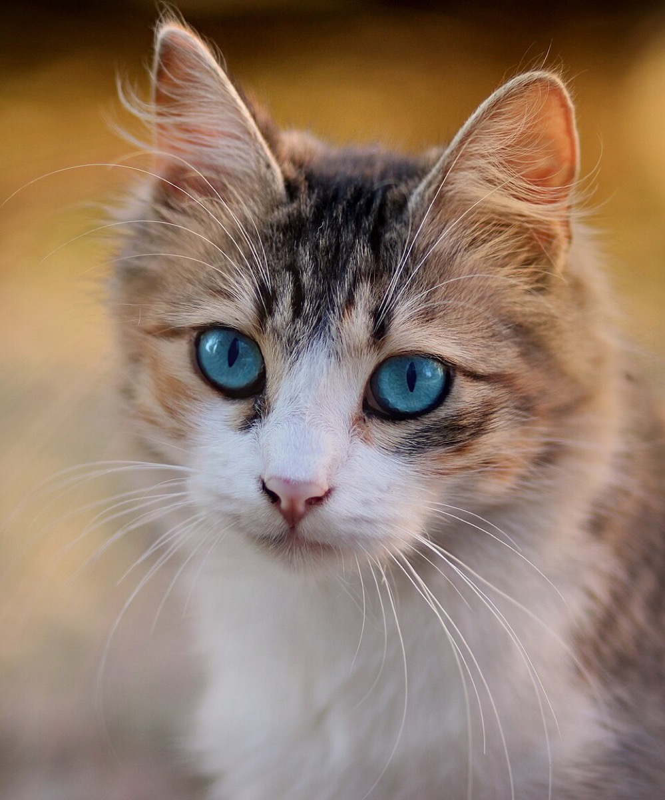
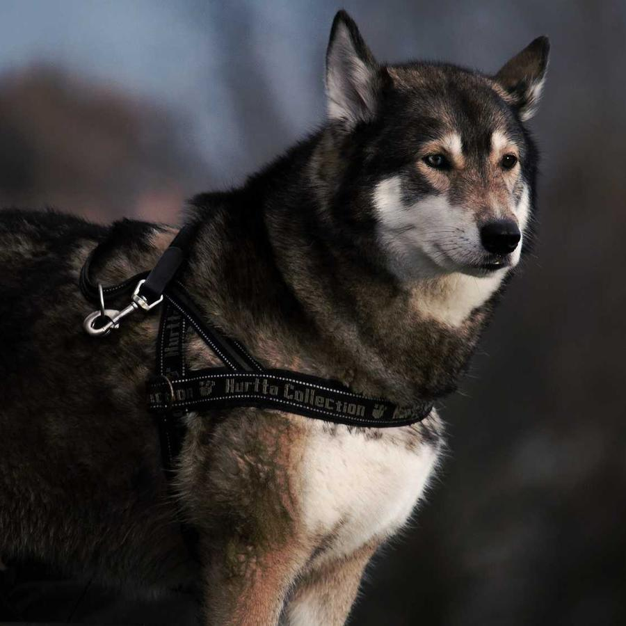
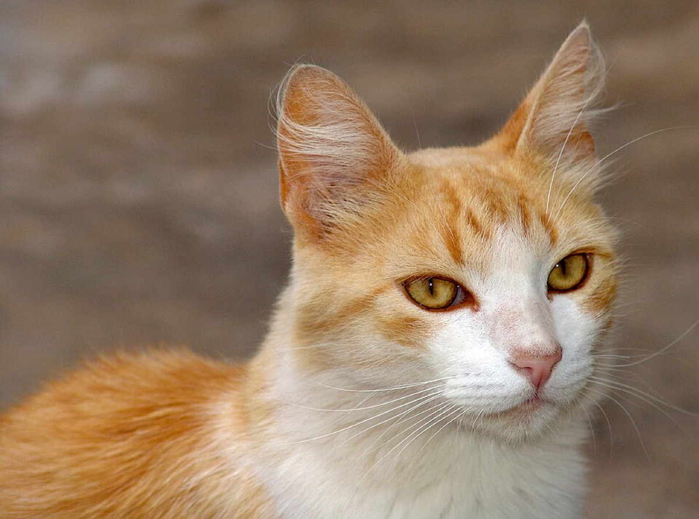
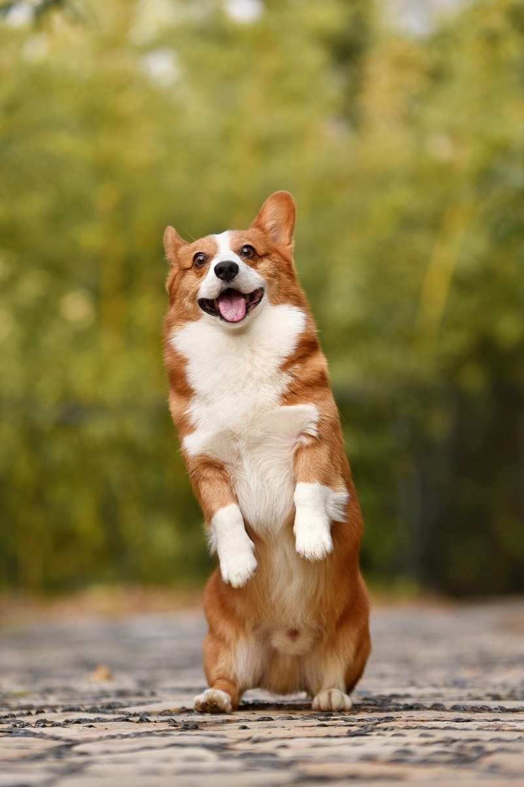
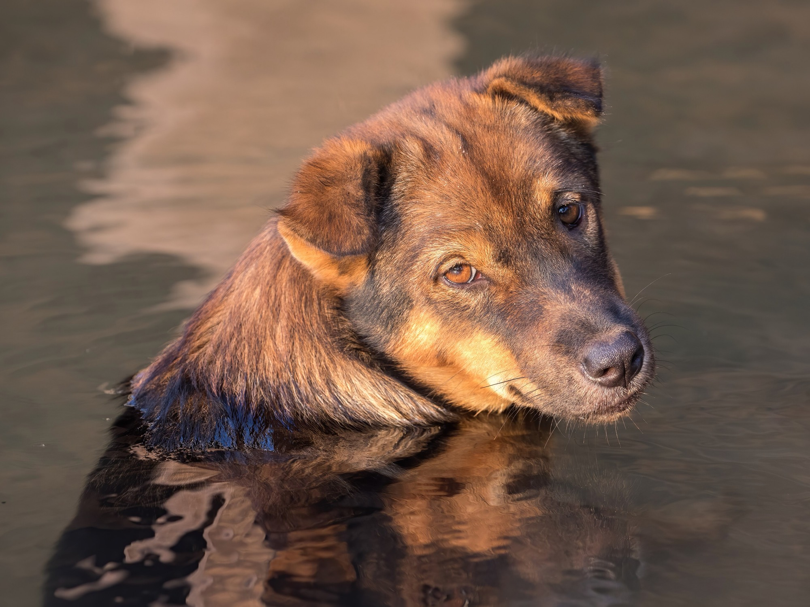
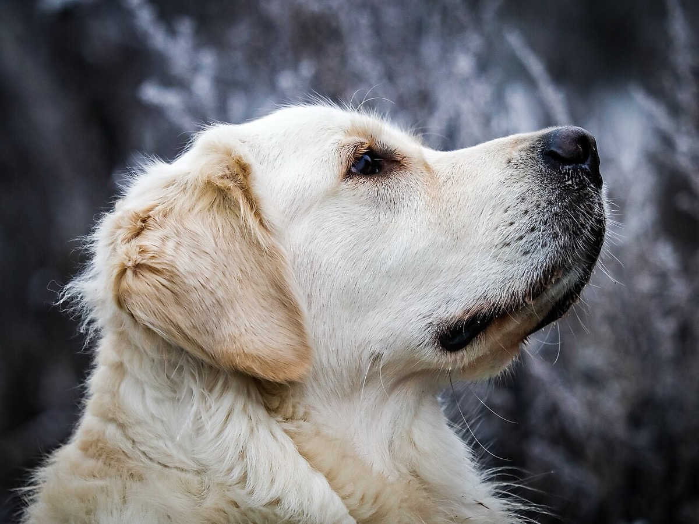
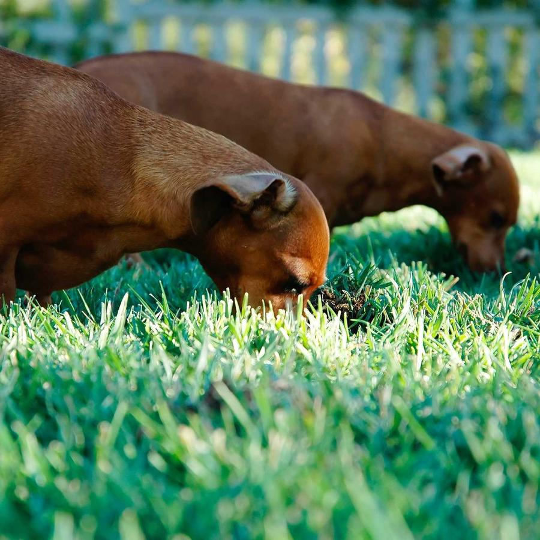

Por qué Argos
En la Odisea, Argos esperó veinte años a que Odiseo volviera a casa. Aquí ninguna mascota debería esperar tanto.






ConócelosPerros y gatos del refugio, listos para casa. Solicita gratis, recibe tu folio y síguelo hasta que llegue.
Quiero adoptarBaja
0 en adopción
Cargando mascotas…
Vista previa con mascotas de ejemplo
Cómo adoptar 01 / 04
Elige con calma.
Solicita en minutos.
Conózcanse en persona.
Síguelo ya en casa.
Lee su ficha: edad, tamaño, carácter y salud.

Lo que te pedimos
Por qué Argos
En la Odisea, Argos esperó veinte años a que Odiseo volviera a casa. Aquí ninguna mascota debería esperar tanto.




Mi folio
Escribe tu folio y tu correo. Si tu adopción ya está aprobada, desde aquí nos mandas su reporte con foto.